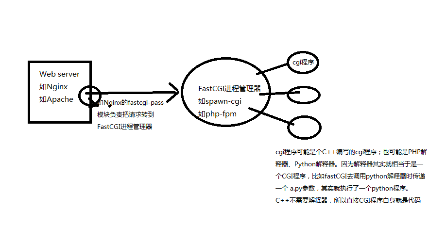

Http 003后台接口cgi介绍
背景
在腾讯，一个非常让我困惑和别扭的东西，就是在这里会经常听到 CGI 这个词。
我一直很疑问:CGI不是都过时了吗? 现在不都是用python, php，nodejs，java，go吗？
那么，为什么那么多人还是在说CGI呢，会不会他们把CGI的概念给搞错了？所以，我带着这些疑问一直在思考，最近也去km上学习了一下。
先说结论: CGI是一种协议
CGI是一种Web服务器与请求处理程序(request handler)之间的一种协议。所谓协议就是数据结构和格式。 尽管我们现在用php、python写代码，用java开发web应用，但实际上当你部署他们的时候，会发现总有一个东西你需要理解，那就是Web Server如何与你的程序逻辑进行联系的。Java还好，用的自己的一套servlet的东西，而php、python如果不用语言内置的server，就必须涉及到如何与Web Server通信，通信就需要协议。所以本质上，PHP、Python、C++都是一样的。CGI不是C++的专利。
我们知道，服务端要处理用户的请求，必须通过编程语言来编写对应的处理逻辑，而你要做的不仅如此，你碰到的第一个问题就是如何接收用户的TCP请求并解析出HTTP协议格式。
OK，专业的事情交给专业的人来干。必然，我们应该用专业的Web Server(如Nginx、 Apache)来接收和解析TCP请求。而业务处理部分不可能会有开源的东西直接拿来用的，毕竟每一家公司的业务都是不同的，所以需要采用C、C++、Perl、Java、Node、Python等等编程语言来编码，并编译为一个可执行程序。(由于php等脚本语言是解释执行的，所以需要靠对应的php解释器来执行)
说到这里，问题就来了，Web服务器如何与业务处理程序进行通信呢，以及其通信时传递数据的格式是怎么样的呢。这里就需要一套标准的协议，于是人们创造了CGI协议。 所以能处理CGI协议数据的业务处理程序，就被称为CGI程序。
Web Server和CGI程序通过环境变量、标准输入、标准输出进行通信。
协议与语言无关，只要一门语言支持标准输入、标准输入、读取环境变量，它就可以用来写CGI程序，就是说可以用bash、perl、c语言等来写。
环境变量中存放的是一次请求的相关信息，比如QUERY_STRING、 PATH_INFO、REMOTE_ADDR、REMOTE_HOST、CONTENT_TYPE、CONTENT_LENGTH、REQUEST_METHOD、SERVER_NAME等。 从标准输入读取的数据如表单中post过来的东西。

既然有了协议规范，那么就要有对应的实现，而且这个实现是双向的。Web Server要实现，业务CGI程序也要实现。WebServer的实现是通过安装对应的扩展包来实现的，比如Nginx的mod_fastcgi； 而另一端的web程序则需要能够 需要一个fastCGI进程管理器来管理，这样的话才能在fastCGI初始化的时候就把各个处理程序给启动起来，等着web服务器发来的CGI请求，来一个就交给一个程序处理。对于C++这种编译型的来说，CGI程序就是程序自身，而对于解释性的PHP、python来说，FastCGI进程管理器所管理的是多个脚本解释器。
CGI
当客户端发出一个执行CGI程序的请求给服务器以后，服务器根据CGI的程序类别，决定某种数据传递方式，即服务器与CGI程序的沟通方式，这就是编写CGI程序的关键点。一般情况下，服务器与CGI程序之间是通过标准输入输出进行数据传递的。
这种通过标准输入输出来实现服务器与CGI之间的数据传递的标准，对于基于文件的UINX系统尤其适用
对服务器与CGI程序而言就是：服务器的标准输出与CGI程序的标准输入相连接，服务器标准输入与CGI的标准输出相连接。如此，就构成了一个完整的数据循环通路。
事实上，每个CGI程序的环境变量集在该CGI程序开始执行到终止，其对应的环境变量集就失效了，也就是对应环境变量集生存期与CGI程序是一致的.
工作流程
- 一个用户请求激活一个CGI应用程序；
- CGI应用程序将交互主页里用户输入信息提取出来；
- 将用户输入的信息传给服务器主机应用程序（如数据库查询〕；
- 将服务器处理结果通过HTML文件返回给用户；
- CGI进程结束。
优点
程序执行一次就退出，不需要关心资源释放，而是在每次处理完请求之后，由系统统一回收。
缺点
- Fork-and-execute的模式，是的每次处理用户请求，都必须经历fork cgi进程、销毁cgi进程，一系列的I/O开销降低了网络的吞吐量
- 每一个客户端的连接都会启动一个CGI进程，在启动CGI进程过程中会不断重复去加载 CGI 脚本，整个过程还是很浪费系统资源，特别是在大并发的访问条件下，性能会很低下的
Apache+CGI
配置Apache以允许CGI很简单。只需要在Apache的配置中，做一个脚本别名的配置:
|
|
这样，所有请求/cgi-bin路径，都被Apache认为是CGI脚本，那么Apache就会去执行usr/local/apache/cgi-bin/这个路径下的程序了。比如，如果有URL为http://www.example.com/cgi-bin/test.cgi的请求，Apache会试图执行/usr/local/apache/cgi-bin/test.cgi文件并返回其输出。当然，这个文件必须存在而且可执行，并以特定的方法产生输出，否则Apache返回一个出错消息。
编写CGI程序
对于CGI模式，这个过程理解起来其实比较简单，所以我们编写的CGI程序也只需要能够进行输入输出流的读写即可。 比如甚至可以用bash来编写一个程序:
|
|
不过下文讲到的FastCGI，由于需要持续运行保持一个死循环来接收新的请求，所以为了方便，C++程序中一般也要引入一个库。
FASTCGI
为了解决CGI的性能问题，出现了FastCGI，fastcgi则采用常驻进程的方式，在每个请求处理和结束的过程中，始终常驻在内存中，一旦激活，不需要花时间去fork，有效降低了前端请求应答的时延。在进行并发请求一个数据接口，或者请求一个文件的测试中，fastCGI的每个请求平均响应时间明显是更短，因此其吞吐量必然也更大。 FASTCGI原理，大概是我画的图这样的： 
来看下Nginx里往FastCGI转发请求的配置:
|
|
可见，fastCGI确实是以Socket或UnixSocket的形式建立连接的。
其大概流程是，Web服务器接收到请求后，通过自身的FastCGI转发模块(如nginx的fastcgi_pass)跟fastCGI进程管理器建立连接，详细如下：
- Web 服务器启动时载入初始化FastCGI执行环境 。 例如 IIS ISAPI、apache mod_fastcgi、nginx ngx_http_fastcgi_module、lighttpd mod_fastcgi
- FastCGI进程管理器(例如跟Nginx配合的spawn_fcgi)自身初始化，启动多个CGI解释器进程并等待来自Web 服务器的连接。启动FastCGI进程时，可以配置以ip和UNIX 域socket两种方式启动。我们看到上面我的老博客的Nginx配置，是把请求转发给php-fpm具有地址和端口，那么php-fpm应该就是以socket的方式启动的。
- 当客户端请求到达Web 服务器时， Web 服务器将请求采用socket方式转发到 FastCGI主进程，FastCGI主进程选择并连接到一个CGI解释器(如果是C++写的就不是解释器了，而是C++的CGI程序)。Web 服务器将CGI环境变量和标准输入发送到FastCGI子进程。
- FastCGI子进程完成处理后将标准输出和错误信息从同一socket连接返回Web服务器。当FastCGI子进程关闭连接时，请求便处理完成。
- FastCGI子进程接着等待并处理来自Web 服务器的下一个连接。
由于 FastCGI 程序并不需要不断的产生新进程，可以大大降低服务器的压力并且产生较高的应用效率。它的速度效率最少要比CGI 技术提高 5 倍以上。它由于跟Web服务器之间通过socket这样的通信，所以还支持分布式的部署， 即 FastCGI程序可以在web 服务器以外的主机上执行。
Nginx+spawn-fcgi
这是Nginx一套nginx下配置fastcgi的常用组合，使用spawn-fcgi这个来让Nginx具有cgi的能力。 首先，安装nginx，安装的nginx自己就具有了转发cgi的能力。
|
|
但是，还得安装一个fastCGI进程管理器，他负责把CGI程序初始化起来，准备好，等待Web服务器的链接。所以需要执行:
|
|
如果编写fastCGI的C++程序，还需要安装到系统上对应的库，在C++代码中进行引用。然后C++代码写成类似这样的:
|
|
与CGI程序的区别，就是主框架中有个循环:
|
|
然后需要配置Nginx里的fastcgi转发:
|
|
然后要启动spawn-fcgi:
|
|
apache+mod_fastcgi
通过mod_fcgid模块实现。这个模块曾属于第三方，但是在2009年被授予ASF，成为Apache的一个子项目。 mod_fcgid的安装参考mod_fcgid目录下的README-FCGID文件，里面包含具体安装方法，这里不在赘述 如果正常安装的话，会自动在apache配置文件中新增如下配置：
|
|
除了上面加载模块外，还需要在CGI运行目录加入如下配置项：
|
|
webserver—qzhttp
这个是公司内部的一个webserver，集成了fastcgi的功能。qzhttp支持fastcgi/cgi的模式，具有一系列成熟的监控模块，在fastcgi模式下，可以自适应的根据请求的数量来动态调整常驻进程的个数
FastCGI的缺点
采用fastcgi固然能够提高吞吐量，但是由于是常驻进程的模式，cgi版本变更发布相比apache+cgi的方式则显得不是那么灵活了。需要按照特定的方式灰度发布生效，后续将会进一步介绍
PHP，Python与C++的不同
通过上面分析和自己在实践过程中的配置，可以发现PHP这种解释性的语言，跟C++不一样，c++编译后的程序可以直接被WebServer的CGI模块调用或者FastCGI进程管理器来调用，但是PHP、Python这种必须依托于解释器的。 比如：我们要运行php或者python，都是需要php或python的解释器来执行。例如执行一个python脚本:
|
|
从上面执行脚本的方式可以看出，这个WebServer这边要想跟具体的处理程序交流，就不能仅仅是启动对应的test.py这么个脚本文件，因为这就是个普通文本文件而已，无法执行的。 所以他必须具有调用php或python解释器的能力。 那么WebServer如何跟解释型的语言进行交流呢。 其实也跟C++没什么区别，只是被执行的CGI程序并不是像C++那样是脚本文件本身，而是对应脚本的解释器，例如php-cgi。
所以区别就是，C++写的CGI程序被WebServer或fastCGI管理器调起时，就是调用其自身。而PHP和Python不是被 PHP目前在部署时，大都采用了FastCGI的方式，比如我配置Nginx+PHP时，采用的是Nginx+php-fpm的一套方案。php-fpm应该是一个fastcgi的进程管理器，它会启动多个进程来加载多个php解释器，当浏览器向Nginx发起请求时，Nginx负责把请求内容转到fastCGI，fastCGI选择一个解释器来执行对应的目标PHP脚本。 下面介绍下python能够与Web服务器交互的各种方式，从而更详细了解脚本型的语言是如何与Web服务器进行交互的:
传统CGI
这种方式应该就是在WebServer装一个针对python的CGI模块，有了这个模块后，Web Server就可以收到请求后不像C++那样去启动对应的目标程序，而是启动一个python解释器并执行目标python程序来生成页面。但这种CGI方式必然也像C++的一样存在性能问题，而且解释性语言更严重，因为每一个请求都需要启动一个python 解释器，而启动解释器需要耗费不少时间。 所以利用cgi接口写程序非常简单，但也只能完成简单的工作。而且因为每个请求都得启动解释器，使得这种接口只适用于低负载的情况。
Apache自动加载解释器: mod_python
90年代末期，Grisha Trubetskoy提出了apache 模块 mod_python，以此来执行python程序。mod_python是将python解释器嵌入到apache进程当中，这样我们就不必对每个请求都启动一个新的解释器。以至于直到00年代早期，apache都是使用这个模块来运行python web应用。
但mod_python也存在一些问题：
- apache使用子进程来处理请求，那么每个子进程不得不加载整个python解释器，不管是否需要使用，拖慢了服务器
- mod_python 发展缓慢，且通用性不高。
- mod_python 依赖于特定的libpython库，每次更新都必须重新编译mod_python。
- 而且mod_python仅适用于apache，当人们用这种模式编写的程序无法在其他服务器上运行。
FastCGI
python也可以用fastCGI的方式运行。原理在上文已经讲到。
- 首先，要安装Nginx并配置其转发。
- 然后需要安装spawn-fcgi来管理python解释器。
- 然后要写一个python的脚本程序，等着解释器被调用时，让解释器来执行。
代码如下，其实类似C++里面利用库来接收cgi的输入了:
|
|
最后，启动spawn-fcgi，他会初始化一定数量的python解释器，等待web服务器请求的到来。
|
|
WSGI
cgi，mod_python，FastCGI，SCGI，以上模块/协议提供了服务器和python程序交流的实际方案。那时，Python应用程序通常是为CGI，FastCGI，mod_python中的一个而设计，然而这种设定限制了服务器的选择。现在，python社区提出了一种接口规范，WSGI。只要遵照这些协议WSGI，应用(Application)都可以在任何服务器(Server)上运行。下面将简述以上模块\协议\接口。 （其实使用WSGI，那些Web服务器同样需要像FastCGI那样安装一些额外的扩展啦）
WSGI（Python Web Server Gateway Interface）， 不是Server，不是python模块，不是python框架，也不是用python编写的软件。 而是由 PEP 3333描述，用来规定Web Server如何与python应用程序通信的接口。
如果一个Python应用程序（或框架，如Django）符合WSGI标准，那么它可以在任何符合WSGI标准的Server上运行（比如Apache）。总之，有了这个协议，你只需要写一个符合该协议的函数，等着别人来调用就行了，Web服务器调用后会自动给你传入合适的http信息。 函数大概长这样:
|
|
使用Python内置的wsgiref模块就能创建一个简单的WebServer，而且由于server跟业务处理程序代码在同一个进程内，所以可以直接调用WSGI的函数就行了:
|
|
WSGI如何与外置的专业web服务器配合部署呢？
- 如果是Apache的话，可以用mod_wsgi这个apache的模块，遵循了wsgi的接口标准，仅能在apache中使用。安装好之后，就可以配置Apache将某个路径的请求转给一个python代码文件，而python文件中就创建一个接收WSGI协议格式的函数, 代码可以是这样:
|
|
- 还有一种fastCGI的方式，暂且不表了。
- python届还有一种利用uwsgi的新的协议的方式，具体可查看其官网。
那么，Python开发web应用是怎样的呢？
其实python与php类似，都是一种解释性的脚本语言。那么，跟C++写的程序不同，要想运行Python，也需要python解释器的参与。
那么，Node呢？
Node.js中开发http应用时，采用的是自启动server，并对request和response对象进行操作的方式。那么这种方式，算CGI吗？
我认为，这种方式相当于在Nginx服务器内部直接处理TCP解析后的http报文，只是说Node种这个服务器给你把http报文封装成了两个好用的对象，而你可以充分而自由的完成对http报文的处理，甚至可以操纵其中的socket。 而此时，我们也该引用一下Node.js的优点了:
- Node.js 的架构与 Django, Rails 等传统的 Framework 不同，不需要放在 Nginx / Apache 后，利用 WSGI， CGI 之类的接口一板一眼的 [接受Request] -> [运行程序逻辑] -> [生成并返回Response]。这是一个巨大的变化，之前一些无法想象的功能都有可能实现了。比如 https://github.com/Miserlou/DirtyShare 可以用浏览器实现 P2P 的文件传输。正因为 Node.js 可以更精细的控制 Request 和 Response 的时间和内容，websocket 似乎天生就是为 Node.js 而生的，而配合 http://socket.io 这个神奇的库之后，在 realtime webapp 这个领域，Node.js 已经没有对手了。
- Node.js 的包管理器 npm 设计得比 python 和 ruby 好很多。有很多的 module 开发者。